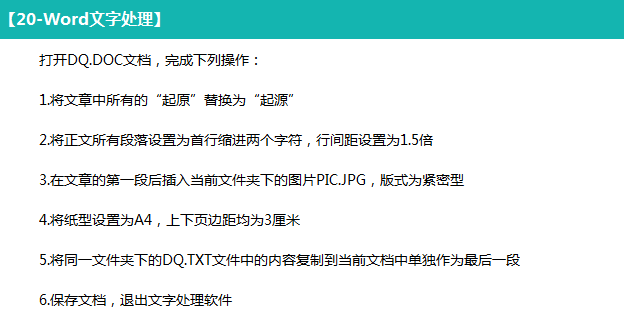

―――――――――――――――――――――――――――――――――――――――――――――――――――――――――― |
||
Word1 （Word考试涉及的菜单） |
||
―――――――――――――――――――――――――――――――――――――――――――――――――――――――――― |
||
|  | ||
| 打开本题 | ||
| 5、操作步骤：1）双击Word文件夹里的DQ.TXT，打开文件 2）按住组合键Ctrl+A全选文档内容 3）Ctrl+C复制文档内容到剪贴板上 | ||
| 4）回到Word文档，光标定位到文档末尾，按Enter（回车键）另起一段 5）Ctrl+V将剪贴板上的内容粘贴到文档内 | ||
―――――――――――――――――――――――――――――――――――――――――――――――――――――――――― |
||